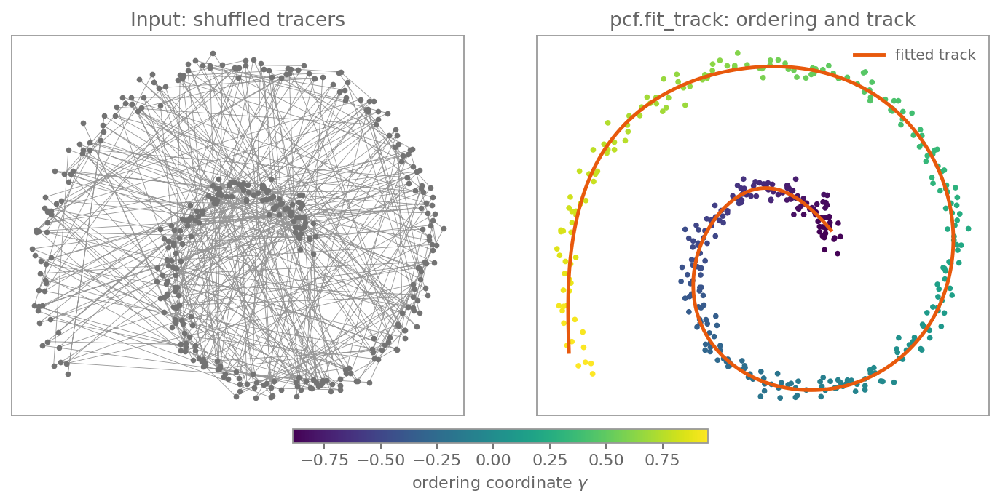
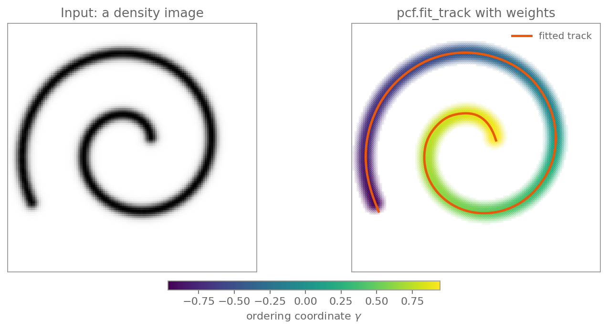

phasecurvefit#
phasecurvefit
Order phase-space data along a curve, then fit a smooth track through it.
You have positions and velocities for many samples that lie along a curve, such as
the stars of a stellar stream, but not the order they come in along it. Or you have
an image of the curve, such as a density map of a stream, and each pixel becomes a
sample weighted by its density. phasecurvefit finds the order, gives every sample an
ordering coordinate \(\gamma\), and fits a smooth mean track \(x(\gamma)\). Its default
needs no known start point, and velocity-aware orderers keep the ordering on the
right strand where a curve crosses itself. It is built on JAX: its orderers and
networks work with jit, vmap and grad, and everything runs on CPU or GPU.

import jax
import jax.numpy as jnp
import phasecurvefit as pcf
# A stand-in for your data: 400 noisy points along a spiral, with velocities
t = jnp.linspace(0.5, 0.5 + 3 * jnp.pi, 400)
r = 1 + 0.6 * t
kx, ky, kp = jax.random.split(jax.random.key(0), 3)
pos = {
"x": r * jnp.cos(t) + 0.2 * jax.random.normal(kx, t.shape),
"y": r * jnp.sin(t) + 0.2 * jax.random.normal(ky, t.shape),
}
vel = {"x": 0.6 * jnp.cos(t) - r * jnp.sin(t), "y": 0.6 * jnp.sin(t) + r * jnp.cos(t)}
shuffle = jax.random.permutation(kp, t.size) # hide the true order
pos, vel = jax.tree.map(lambda a: a[shuffle], (pos, vel))
config = pcf.nn.TrainingConfig(show_pbar=False)
ordering, fitted, losses = pcf.fit_track(
pos, vel, key=jax.random.key(1), training_config=config
)
track = fitted(jnp.linspace(*fitted.track_range, 300)) # the smooth mean track
print(fitted.gamma.shape) # an ordering coordinate for every sample: (400,)

import jax
import jax.numpy as jnp
import phasecurvefit as pcf
# A stand-in for your data: the same spiral as an image, blurred across the curve
t = jnp.linspace(0.5, 0.5 + 3 * jnp.pi, 400)
r = 1 + 0.6 * t
grid = jnp.linspace(-7.5, 7.5, 120)
X, Y = jnp.meshgrid(grid, grid)
cx, cy = r * jnp.cos(t), r * jnp.sin(t)
d2 = jnp.min((X[..., None] - cx) ** 2 + (Y[..., None] - cy) ** 2, axis=-1)
image = jnp.exp(-d2 / (2 * 0.3**2))
keep = image.ravel() > 0.05 # each bright pixel becomes a sample
pos = {"x": X.ravel()[keep], "y": Y.ravel()[keep]}
vel = jax.tree.map(jnp.zeros_like, pos) # an image has no velocities
weights = image.ravel()[keep] # weighted by the density there
config = pcf.nn.TrainingConfig(show_pbar=False)
ordering, fitted, losses = pcf.fit_track(
pos, vel, key=jax.random.key(1), weights=weights, training_config=config
)
track = fitted(jnp.linspace(*fitted.track_range, 300)) # the smooth mean track
print(fitted.gamma.shape == weights.shape) # a gamma for every pixel: True
An image has no velocities, so nothing sets which end of the curve \(\gamma\) starts
from. fit_track orders with the default pipeline, which is fine for a thin
stream like this one. For a wide or uniform field, order with a
RidgeOrderer first (Choose an orderer).
The script that draws these figures runs this same code
(docs/_static/generate_hero.py).
Where to start#
Pick the line that matches your data. Each one leads to a tutorial that runs from simulated data to a result.
A stream or curve, and no known start point. A minimum-spanning-tree backbone finds both ends itself: order a stream with no start index.
A stream with a known progenitor or start point. Walk along the flow from it and fit the track: the stream autoencoder tutorial, the best first tutorial.
A curve that crosses itself. The default pipeline orders by position and cuts across the crossings, so use a velocity-aware orderer instead: the epitrochoid autoencoder tutorial.
Contaminated data. A stream-plus-background mixture model gives each sample a membership probability: the outlier-rejection tutorial.
A track that must be fast, for example inside a likelihood evaluated at every step of an MCMC: the training-free running-mean track.
An image or density map, not a list of samples. Each pixel becomes a sample weighted by its value: the density-field tutorial.
The documentation#
What the library does, whether it suits your data, installation, and a first fit.
Complete analyses from simulated data to a result, grouped by the kind of data.
One task each: choose an orderer, tune the metric, fill gaps, reject outliers, use JAX.
The local-flow walk, the MST backbone, the SOM, the autoencoder and the mixture model.
Every public class and function, options and defaults, migration notes and citation.
Why phasecurvefit?  #
#
Before fitting a model to a curve in phase space you need an ordering coordinate for every sample and a smooth track through them. Doing this by hand, or with a position-only nearest-neighbour or clustering method, breaks down in the cases that matter:
Curves that cross or fold back on themselves. Where two strands meet, the nearest point is often on the wrong strand. phasecurvefit’s velocity-aware orderers use velocities as well as positions, so the ordering stays on the right strand.
No known starting point. The default pipeline finds the two ends of the curve itself, so no progenitor position or hand-picked start index is needed.
Incomplete orderings. An orderer may order only a reliable subset. An autoencoder then assigns \(\gamma\) to every sample and learns a smooth mean track.
Contamination. A stream-plus-background mixture model gives each sample a calibrated membership probability, so interlopers can be down-weighted or removed.
Use inside larger models. The orderers and networks work with
jit,vmapandgrad, and a training-free running-mean track is available when speed matters more than accuracy.
phasecurvefit was built for stellar streams and applies to any ordered phase-space data.